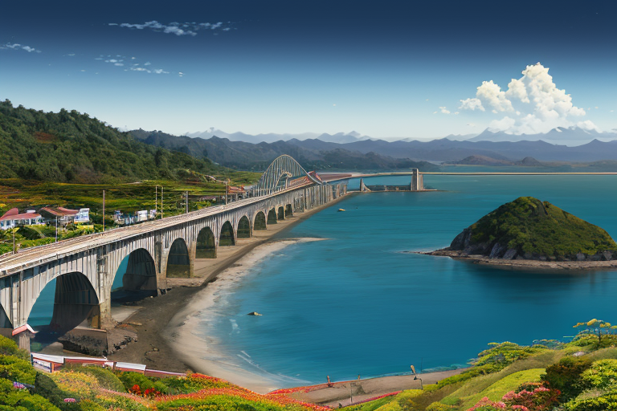
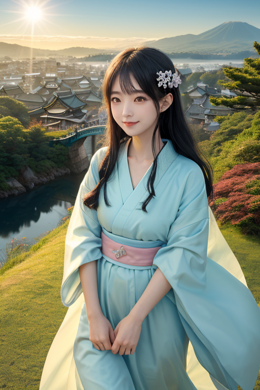
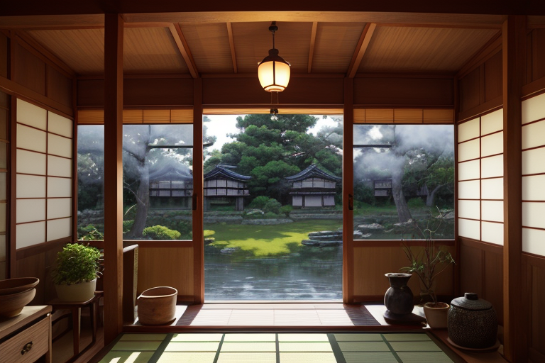
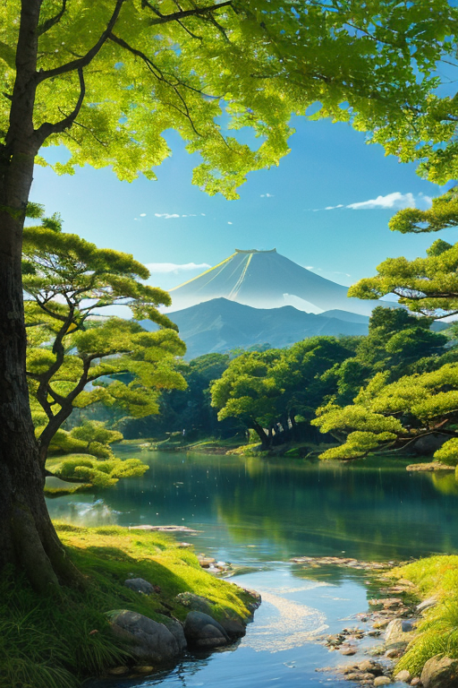
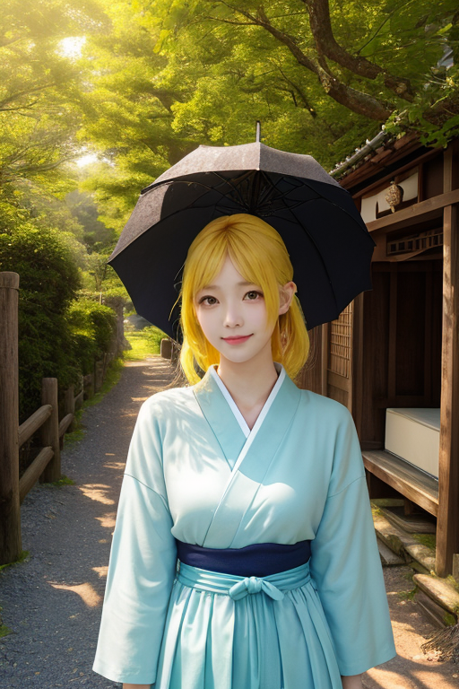

第一章 現実の岡山
あなたはまだ気づいていない。この土地にも、王がいることを。
瀬戸大橋は、青い海と空を銀色の線で縫い合わせていた。本州と四国を繋ぐこの巨大な構造物は、境界そのものだ。山陽と南海のプレートが接するこの地で、王は立つ。オカヤマリア・クリア。彼の王国は「晴天と均整」を司る。彼は感情を持たぬ存在として、歪みを調整するためにここに派遣された。揺れを一段階緩め、津波の到達を数秒遅らせる。それだけが、その役目だった。
港町の匂い、潮風に混じる桃の甘い香り。均整のとれた美観地区の白壁と、瀬戸内の穏やかな海。すべてが「整っている」ように見えるこの風景の下で、プレートは静かに、しかし確実に圧力を蓄えていた。整うこと。それはこの土地の願いであり、彼の役割の根幹だった。だが、整うことが、果たしてこの地に住まう者たちの幸福に直結するのか。彼には、まだわからなかった。

第二章 歪みの兆候
備中松山城が雲海に浮かぶ朝、彼は微かな違和感を覚えた。山陽と山陰の境界、その線に沿って、いつもより濃い「外部」の気配が流れ込んでくる。それは、隣接する王国の調整によって生じた、予期せぬ圧力の偏りだった。均整を保つ彼の役目は、内部の調整だけではない。外から押し寄せる見えない波を、この地の形に合わせて整え、分散させねばならない。
吉備津神社の長い回廊を歩きながら、彼は考える。均整が崩れれば、人々は不安を覚える。だが、完璧に整えられた状態が、果たして息づくための最善の形なのか。備前焼の窯変のように、予測不能な「歪み」が、時に深い味わいを生むこともあるのではないか。彼の手から放たれる晴天光線は、外部からの圧力を和らげ、瀬戸大橋を渡る風の流れをほんの少し調整した。整うことの意味を、彼はまだ知らない。ただ、この地がその形を保てるよう、微調整を続けるだけだった。

第三章 王の葛藤
倉敷美観地区の白壁と柳の静けさは、彼の内面の均衡を映し出していた。歪みの微調整は、彼の本質である。だが、吉備津神社の鳴釜神事で聞いた、人々の切なる願いの「熱」は、彼の内側に小さな乱流を生んだ。願いは、必ずしも均整を求めるものばかりではなかった。複雑に絡み合い、時に矛盾する人間の感情は、彼がこれまで保ってきた「整い」の概念を揺さぶる。
ある夕暮れ、備前焼の窯元を訪れた彼は、窯変の器を手にした。均一な赤褐色の中に、予期せず現れた緋襷の文様。窯の中の偶然の産物であり、歪みそのものだ。職人はそれを「景色」と呼び、最高の出来と喜んだ。整わないこと、予測できないことが、価値を生む。その瞬間、彼の内なる安定が、微かに軋んだ。
整うことは安心をもたらす。だが、幸福とは何か。彼が調整する物理的な均衡と、人々が心に抱くそれとは、同じものなのか。問いは深まり、晴天光線を放つ彼の手に、初めて迷いの影が差した。

第四章 妖精との対話
「王様、あなたは『整うこと』を、あまりに重く見すぎています」
倉敷川の柳の下で、クリアナが静かに言った。水面に映る彼女の姿は、揺らめく光の粒のようだ。
「私たちは均衡を保つためにここにいます。でも、均衡とは、ただの『同じ』ではありません。川の流れも、今日と昨日では速度が違う。空気の湿り気も、刻一刻と変わります。それら全てを含んで、初めて『岡山の晴天』という均衡が成り立つのです」
彼女は手を差し伸べ、風に揺れる柳の一枝に触れた。
「整うこと。それは、すべてを均一にすることではなく、多様なものがその場に在ることを許容する状態です。桃太郎伝説だって、鬼がいて、退治する者がいて、初めて物語になります。吉備津神社の鳴釜神事だって、音の『在り方』で未来を占う。不在があって、初めて在るものの価値がわかる。別れがあるから、出会いが輝く」
彼は、備前焼の窯で生まれた「景色」のことを思い出した。歪みが、美を生んだ。
「幸福とは、きっと……すべてが整った状態ではなく、整わないものも含めて、そこに在ることを心から肯定できる瞬間なのでしょう。私たちが微調整するのは、その瞬間が、あまりにも早く崩れ去らないようにするためだけです」
クリアナの言葉は、優しい雨のように彼の迷いを洗い流したわけではない。むしろ、迷いそのものが、彼という存在を形作る「景色」なのだと気づかせてくれた。

第五章 微調整と余韻
瀬戸大橋を渡る風は、内海と外海の境で微妙に温度を変えた。オカヤマリアはその風の流れを指先でなぞり、ごく僅か、夏の突風が観光船の進路を脅かさないよう軌道を修正した。彼の仕事は、物事が「整いすぎない」ようにすることでもあった。完璧な均衡は停滞を生む。備前焼の窯変のように、予期せぬ出会いやほころびが、新たな文化の流れを生むのだ。
倉敷美観地区の白壁の町並みを、一人の写真家がカメラに収めていた。彼は何度もシャッターを切るが、どこか満足できずにいた。オカヤマリアが、路地裏からほんの一瞬、木漏れ日を差し込ませると、写真家のレンズには、思いがけず古い蔵と新しいカフェの看板が調和する一瞬が捉えられた。写真家の顔に、発見の喜びが浮かぶ。整っていないからこそ見える美。調整とは、そうした邂逅の「間」を作ることだ。
彼は自らが感情を宿す「歪み」であることを、今は静かに肯定していた。すべてを整え、固定することは、この国の豊かな感情の密度を殺すだろう。彼の役目は、崩れゆくものと新たに生まれるものの狭間で、ほんの少しの余韻を紡ぐこと。それだけでいい。
夕暮れ、吉備津神社の長い回廊を歩きながら、彼はそっと呟いた。
「幸福とは……整う過程そのものなのかもしれない」
あなたの町にも、王がいる。